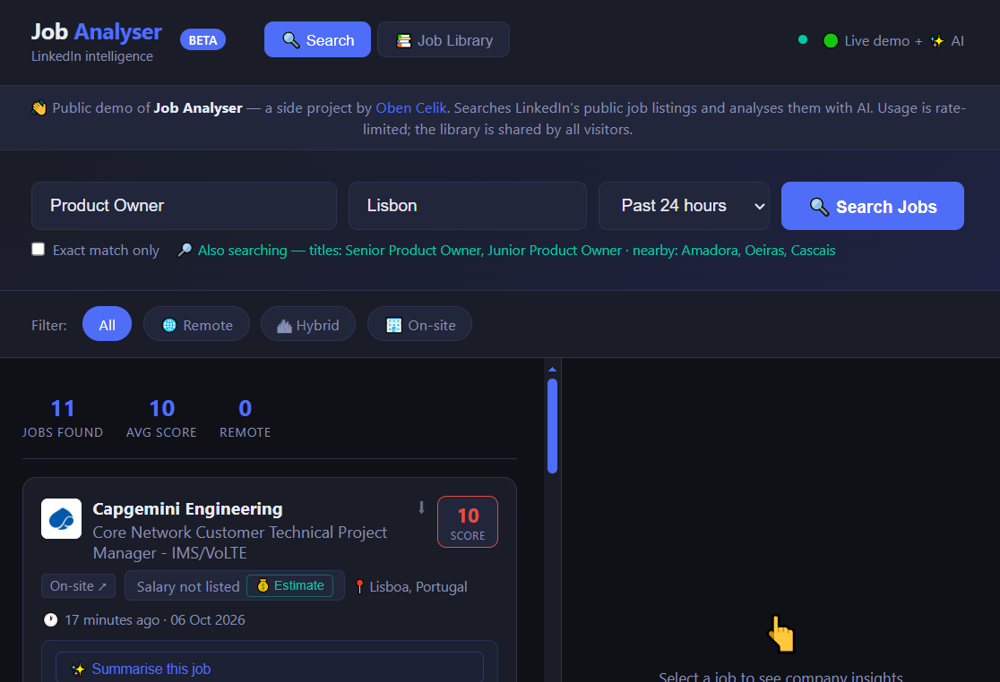

AI · Job Search
Live
Job Analyser
Searching LinkedIn means reading dozens of long postings to find the few worth applying to. Job Analyser pulls live listings and uses AI to decode each one in seconds.
What it does
- →Live LinkedIn search, widened to related titles and nearby cities
- →AI breakdown: what the role is for, must-haves vs nice-to-haves, skills
- →Red and green flags, perks and an estimated salary range
Key product decision
It started as a personal desktop tool. To open it to the public I rescoped it: owner-only features switched off, per-visitor rate limits and a daily AI budget cap, so a public demo stays safe, fair and cheap to run.
Python · Flask
Google Gemini AI
Google Cloud Run
Auto-deploys from GitHub